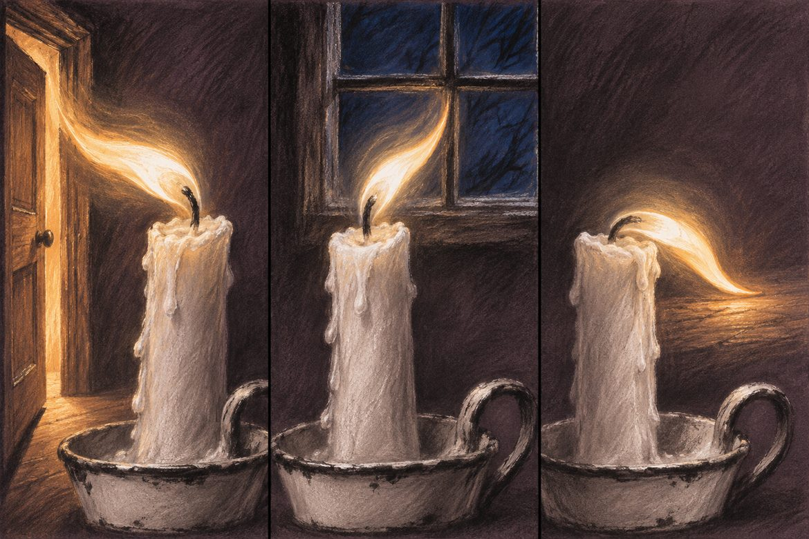
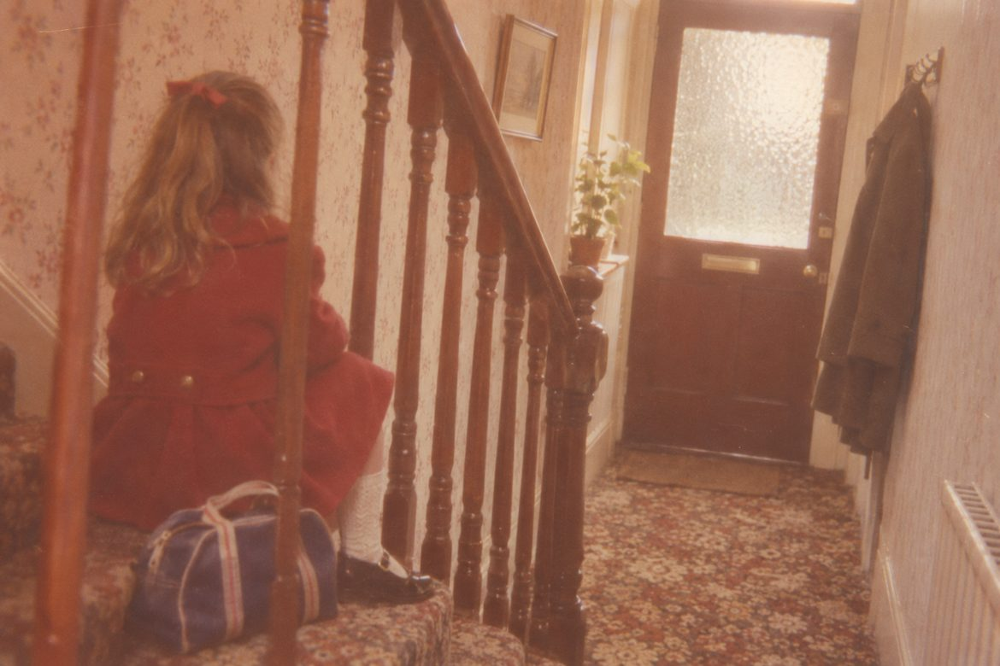

It always bends. On the fourth or fifth time I say it, the flame leans. The air on that side goes cold, and I feel it on the back of my hand.
It only ever goes one of three ways.

A, toward the door: someone was meant to come, and didn't.
B, toward the window: someone left, and you watched the car go.
C, low, toward the floor: something happened that nobody talked about after.
Which one is yours? Tap your guess.
The door, then. Someone once said they'd come.
The window, then. You still remember the sound of the car.
Low, then. It's the thing nobody says out loud.
I won't know until tonight. By morning, you will.
Most readers will tell you whether he'll come back. I look at the afternoon that taught you to wait.
On Christmas Eve in Ireland, the youngest in the house lights a candle and sets it in the window. It's a light for anyone still on the road home.
This year, let me light one for the youngest you. Part of her is still back on that day, waiting.
You might wonder how a candle finds her from a first name.
Your name was the first thing anyone gave you. It was said over you that day too. Gently, or tiredly, or crossly. Whatever happened, your name was in the room.
The flame finds the room.
So I follow the flame back.
All the way back to her.

It's almost never a big day. It's a small afternoon nobody else remembers. And that afternoon, she made a rule to keep herself safe. Most often, it's this one:
If I'm no trouble, he'll stay.
It's why your friends call you the easy one. Why he's never once had to ask what you need. And maybe, the one time you finally asked for something, a man told you that you were too much.
It was never that you're too much, Jules.
That rule has been choosing for you ever since. The ones who take and never ask. The ones who can't decide. The ones who leave anyway, however little trouble you were.
A little girl picked them, long before she was old enough to choose.
Finding it is only half the work. Then I clear it.
On my table there's a length of black cord. It stands for whatever has fed that rule since the afternoon it started.
I cut it. Then I seal both ends with wax, so nothing can travel back along it to you.
It takes two to three hours of concentrated work. It drains me. But for those who are ready, it's worth it.
Most rules come loose in that time. The very old ones take longer.
This is my Energy Clearing Ritual.
Christmas Eve is a month away. Most of us end up back at the same table, with the same people, playing the part we learned as girls.
I'd like yours cleared before you sit down.
Once the cord is cut, the rule stops choosing for you. And then I see you, Jules…
A quiet afternoon. His hand reaching for yours first. His words and his actions, finally walking in step.
Your sister asks what's changed.
He asks what you'd like, for once.
It rarely arrives how women expect. It's small. Sleeping through the night. Not reaching for the phone.
This is your crossroads, dear.
Now the offering. Let me tell you plainly where it goes.
I light a fresh candle for you. No one else's name is ever said over it.
I say your name until it bends, and follow it back to that afternoon.
I cut it and seal both ends with wax.
I write it all down: what I found, what I cleared, and three steps for your next 30 days. Five to seven pages, only to you.
It's in your email.
The candle, the cord, the wax, and two to three hours of a night I can't give to anyone else. Spent once, for you.
A declaration to the universe that you're ready for this change.
My 30-day guarantee. If by day 30 nothing has shifted, if you're still reaching for the phone at night, email me. Every penny back. You don't have to explain.
Two things women say to me here. I'd rather answer them now than have you sitting with them.
I know. $35 is not nothing when the month is already thin. So don't decide by what you can spare. Decide by what another year of this costs you.
That's fair. But I read what's live tonight, not what's cooled by Friday. Waiting doesn't keep it safe for you. It just means I'd be reading a fainter thing.
This isn't for you if you want me to tell you when he'll text. I don't do that. I clear what keeps choosing him.
P.S. The candle's on my windowsill, and the cord is cut to length. If your name reaches me tonight, it's the next one I'll say.